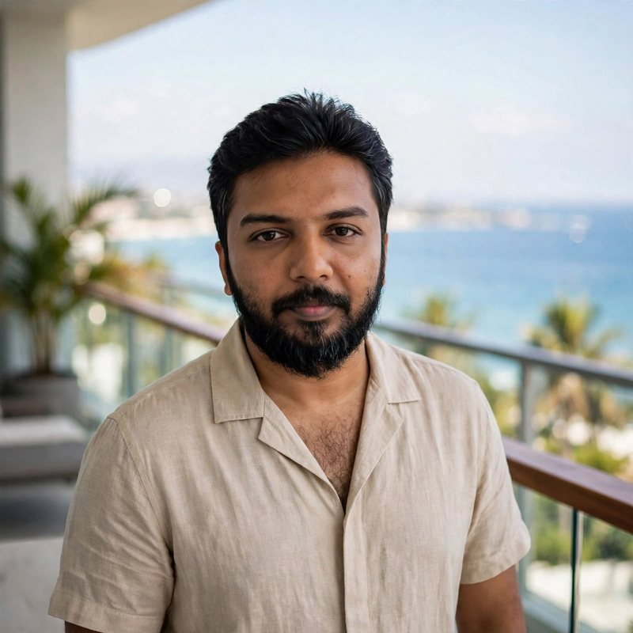

◆ LLM SYSTEMS
AI/LLM-driven platforms
Leading the adoption of AI/LLM solutions across critical infrastructure and asset monitoring — from architecture to production observability and secure delivery.
Chennai, India · Building with AI / LLMs & MCP
Engineering leader at the intersection of AI/LLM systems, MCP architectures and resilient, connected infrastructure — turning complex ideas into intelligent products that work in the real world.
01 AI Focus
Bringing LLMs, agents and the Model Context Protocol out of the demo and into platforms that monitor, decide and scale.
Leading the adoption of AI/LLM solutions across critical infrastructure and asset monitoring — from architecture to production observability and secure delivery.
Designing MCP-based integrations that give models safe, structured access to tools and data.
Bringing AI agents into the engineering lifecycle to ship faster without trading off quality.
Replacing complex dashboards with conversations — intelligent automation people actually use.
IoT, M2M telematics, big data and multi-cloud platforms — the reliable, high-availability foundations that intelligent systems depend on.
02 About

Around 16 years in the IT industry, including over 8 years specializing in IoT and M2M, I build robust products that turn complicated systems into useful, intelligent experiences.
Today, my focus is at the intersection of AI/LLM-driven systems, MCP architectures, and natural language solutions. I lead the full product journey, from technical architecture and development to the scalability challenges that appear when great ideas meet the real world.
I’m known for clear communication, adaptability, and a team-first mindset. I enjoy translating complex technical ideas into practical, value-driven outcomes.
03 Experience
Selected chapters from a journey across software, IoT, critical infrastructure — and now AI.
Comcast
Chennai, Tamil Nadu · Hybrid
Leading the end-to-end engineering lifecycle for critical infrastructure and asset monitoring platforms. Driving architecture, full-stack development, release management, observability, secure delivery, and the adoption of AI/LLM and MCP-based solutions.
Boodskap
Chennai, Tamil Nadu
Architected an enterprise IoT platform designed to be hardware, industry, and developer agnostic: reliable, scalable, highly available, and secure.
TPF Software · Teezle
Chennai, Tamil Nadu
Built IoT and M2M telematics products across Java, Spring, MEAN, AWS, DevOps, full-stack, and hybrid mobile ecosystems.
MEL Systems · Adapto Technologies
Chennai, Tamil Nadu
Started the journey building web, mobile, and enterprise applications with Python, Django, PHP, Android, and Core Java.
04 Capabilities
Strategy and execution, held together by a systems mindset.
MCP · GenAI · natural language interfaces · intelligent automation · agentic coding
Strategic planning · product lifecycle · requirements analysis · technical direction
Scalability · high availability · distributed systems · integrations
Full-stack development · cloud · DevSecOps · performance tuning
Team building · agile & Scrum · design thinking · collaboration
IoT · M2M · telematics · asset monitoring · critical infrastructure
Have a complex problem?
AI strategy, LLM/MCP architecture, or a platform that needs to scale — I’d love to hear about it.